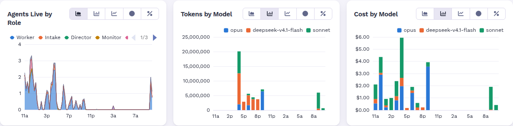
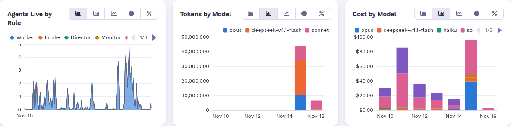
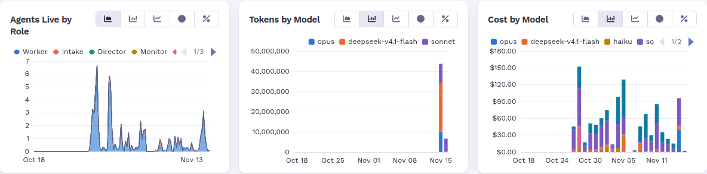

Each part is the live page's own markup (week, captured 2026-11-16) on ui/app.css. Fixed applies the finding's fix to that markup. Numbers are the findings of the retro.
When /api/flow fails
- proven The error line is grey:
.card pwins over.error p. Fixed:--error. - proven The Success tile spins with no end (
loading: !a). Fixed, as decided: the spinner at the upper right while waiting, then a still red ring with!there. No dash. - rated 4 The line reads
Could not load Flow (500).Fixed:Could not load the agents., no hint, the status in Technical details.
Now
OpenRouterup / $0.77status / spend
Live agents1 / –workers / other
Follow-ups–follow-ups / filed
SuccessLoadingruns / first pass
Agents
Could not load Flow (500).
Check that aleph-ui is running, then reload.
Roles
Could not load Flow (500).
Check that aleph-ui is running, then reload.
Fixed
Waiting
OpenRouterup / $0.77status / spend
Live agents1workers / other
Follow-ups follow-ups / filed
Success runs / first pass
Failed
OpenRouterup / $0.77status / spend
Live agents!1workers / other
Follow-ups! follow-ups / filed
Success! runs / first pass
Agents
Could not load the agents.
Technical details
GET /api/flow: 500
Roles
Could not load the agents.
Technical details
GET /api/flow: 500
The Roles card
- proven Stuck draws plain. Fixed:
badCount(), red above 0 (Small 16, Medium 5, Large 1). - proven ▸ is a browser button and pushes the Model cell right. Fixed: a muted mark in a fixed gutter.
- proven
span.mhas no style in a table. Fixed:span.quiet, so 132 and · 95% first are muted. - proven Header
Per output. Fixed:Per Output. - rated 4 Aside
First pass 67.6%repeats the Success tile. Fixed: gone. - rated 3 Group row
Rolesrepeats the card title. Fixed here asOther Roles; the name is open.
Now
Roles
First pass 67.6%| Agent | Model | Runs | OK | Stuck | p50 | p95 | Cost | Per output | Output |
|---|---|---|---|---|---|---|---|---|---|
| Workers | |||||||||
| Small | 133 | 64% 132 ▼ 3% | 16 | 6m 21s | 30m 06s | $14.03 | $0.17 | 83 landed · 95% first · 89% review | |
| Medium | 312 | 57% 312 ▲ 1% | 5 | 4m 44s | 16m 19s | $144.84 | $0.85 | 171 landed · 94% first · 71% review | |
| Large | 42 | 60% 42 | 1 | 5m 26s | 14m 27s | $22.23 | $0.89 | 25 landed · 16% first · 81% review | |
| Unsized | opus | 30 | 63% 30 | 0 | 5m 31s | 18m 53s | $18.36 | $1.02 | 18 landed · 6% first · 73% review |
| Roles | |||||||||
| Reviewer | 420 | 97% 419 ▼ 3% | 0 | 39s | 1m 40s | $99.64 | $0.25 | 405 verdicts | |
| Intake | 418 | 100% 418 ▬ 0% | 0 | 45s | 2m 05s | $194.61 | $0.47 | 418 triages | |
| Director | 85 | 100% 85 ▬ 0% | 0 | 32s | 1m 09s | $19.08 | $0.22 | 85 steps | |
| Monitor | 7 | 7 / 7 | 0 | 16s | 10m 00s | $0.03 | <$0.01 | 7 readings | |
| Maintainer | 19 | 19 / 19 | 0 | 24s | 2m 49s | $4.70 | $0.25 | 19 runs | |
| Lens | 1 | 1 / 1 | 0 | 3m 05s | 3m 05s | $0.56 | $0.56 | 1 run | |
| Housekeeper | 113 | 100% 113 | 0 | 45s | 2m 43s | $40.46 | $0.36 | 113 sweeps | |
| Title | 2 | 2 / 2 | 0 | 0s | 4s | $0.01 | $0.01 | 2 titles | |
| Judge | 6 | 6 / 6 | 0 | 10s | 15s | $0.01 | <$0.01 | 6 calls | |
Fixed
Roles
| Agent | Model | Runs | OK | Stuck | p50 | p95 | Cost | Per Output | Output |
|---|---|---|---|---|---|---|---|---|---|
| Workers | |||||||||
| Small | 133 | 64% 132 ▼ 3% | 16 | 6m 21s | 30m 06s | $14.03 | $0.17 | 83 landed · 95% first · 89% review | |
| Medium | 312 | 57% 312 ▲ 1% | 5 | 4m 44s | 16m 19s | $144.84 | $0.85 | 171 landed · 94% first · 71% review | |
| Large | 42 | 60% 42 | 1 | 5m 26s | 14m 27s | $22.23 | $0.89 | 25 landed · 16% first · 81% review | |
| Unsized | opus | 30 | 63% 30 | 0 | 5m 31s | 18m 53s | $18.36 | $1.02 | 18 landed · 6% first · 73% review |
| Other Roles | |||||||||
| Reviewer | 420 | 97% 419 ▼ 3% | 0 | 39s | 1m 40s | $99.64 | $0.25 | 405 verdicts | |
| Intake | 418 | 100% 418 ▬ 0% | 0 | 45s | 2m 05s | $194.61 | $0.47 | 418 triages | |
| Director | 85 | 100% 85 ▬ 0% | 0 | 32s | 1m 09s | $19.08 | $0.22 | 85 steps | |
| Monitor | 7 | 7 / 7 | 0 | 16s | 10m 00s | $0.03 | <$0.01 | 7 readings | |
| Maintainer | 19 | 19 / 19 | 0 | 24s | 2m 49s | $4.70 | $0.25 | 19 runs | |
| Lens | 1 | 1 / 1 | 0 | 3m 05s | 3m 05s | $0.56 | $0.56 | 1 run | |
| Housekeeper | 113 | 100% 113 | 0 | 45s | 2m 43s | $40.46 | $0.36 | 113 sweeps | |
| Title | 2 | 2 / 2 | 0 | 0s | 4s | $0.01 | $0.01 | 2 titles | |
| Judge | 6 | 6 / 6 | 0 | 10s | 15s | $0.01 | <$0.01 | 6 calls | |
When /api/models fails
- rated 3 The selects turn to text with no line to say why. Fixed:
notice()above the table.
Now
Roles
First pass 67.6%| Agent | Model | Runs | OK | Stuck | p50 | p95 | Cost | Per output | Output |
|---|---|---|---|---|---|---|---|---|---|
| Workers | |||||||||
| Small | deepseek-v4.1-flash | 133 | 64% 132 ▼ 3% | 16 | 6m 21s | 30m 06s | $14.03 | $0.17 | 83 landed · 95% first · 89% review |
| Medium | sonnet | 312 | 57% 312 ▲ 1% | 5 | 4m 44s | 16m 19s | $144.84 | $0.85 | 171 landed · 94% first · 71% review |
| Large | opus | 42 | 60% 42 | 1 | 5m 26s | 14m 27s | $22.23 | $0.89 | 25 landed · 16% first · 81% review |
| Unsized | opus | 30 | 63% 30 | 0 | 5m 31s | 18m 53s | $18.36 | $1.02 | 18 landed · 6% first · 73% review |
| Roles | |||||||||
| Reviewer | opus | 420 | 97% 419 ▼ 3% | 0 | 39s | 1m 40s | $99.64 | $0.25 | 405 verdicts |
| Intake | opus | 418 | 100% 418 ▬ 0% | 0 | 45s | 2m 05s | $194.61 | $0.47 | 418 triages |
| Director | opus | 85 | 100% 85 ▬ 0% | 0 | 32s | 1m 09s | $19.08 | $0.22 | 85 steps |
| Monitor | deepseek-v4.1-flash | 7 | 7 / 7 | 0 | 16s | 10m 00s | $0.03 | <$0.01 | 7 readings |
| Maintainer | sonnet | 19 | 19 / 19 | 0 | 24s | 2m 49s | $4.70 | $0.25 | 19 runs |
| Lens | opus | 1 | 1 / 1 | 0 | 3m 05s | 3m 05s | $0.56 | $0.56 | 1 run |
| Housekeeper | opus | 113 | 100% 113 | 0 | 45s | 2m 43s | $40.46 | $0.36 | 113 sweeps |
| Title | haiku | 2 | 2 / 2 | 0 | 0s | 4s | $0.01 | $0.01 | 2 titles |
| Judge | haiku | 7 | 7 / 7 | 0 | 11s | 15s | $0.01 | <$0.01 | 7 calls |
Fixed
Roles
First pass 67.6%Could not load the models.
| Agent | Model | Runs | OK | Stuck | p50 | p95 | Cost | Per output | Output |
|---|---|---|---|---|---|---|---|---|---|
| Workers | |||||||||
| Small | deepseek-v4.1-flash | 133 | 64% 132 ▼ 3% | 16 | 6m 21s | 30m 06s | $14.03 | $0.17 | 83 landed · 95% first · 89% review |
| Medium | sonnet | 312 | 57% 312 ▲ 1% | 5 | 4m 44s | 16m 19s | $144.84 | $0.85 | 171 landed · 94% first · 71% review |
| Large | opus | 42 | 60% 42 | 1 | 5m 26s | 14m 27s | $22.23 | $0.89 | 25 landed · 16% first · 81% review |
| Unsized | opus | 30 | 63% 30 | 0 | 5m 31s | 18m 53s | $18.36 | $1.02 | 18 landed · 6% first · 73% review |
| Roles | |||||||||
| Reviewer | opus | 420 | 97% 419 ▼ 3% | 0 | 39s | 1m 40s | $99.64 | $0.25 | 405 verdicts |
| Intake | opus | 418 | 100% 418 ▬ 0% | 0 | 45s | 2m 05s | $194.61 | $0.47 | 418 triages |
| Director | opus | 85 | 100% 85 ▬ 0% | 0 | 32s | 1m 09s | $19.08 | $0.22 | 85 steps |
| Monitor | deepseek-v4.1-flash | 7 | 7 / 7 | 0 | 16s | 10m 00s | $0.03 | <$0.01 | 7 readings |
| Maintainer | sonnet | 19 | 19 / 19 | 0 | 24s | 2m 49s | $4.70 | $0.25 | 19 runs |
| Lens | opus | 1 | 1 / 1 | 0 | 3m 05s | 3m 05s | $0.56 | $0.56 | 1 run |
| Housekeeper | opus | 113 | 100% 113 | 0 | 45s | 2m 43s | $40.46 | $0.36 | 113 sweeps |
| Title | haiku | 2 | 2 / 2 | 0 | 0s | 4s | $0.01 | $0.01 | 2 titles |
| Judge | haiku | 7 | 7 / 7 | 0 | 11s | 15s | $0.01 | <$0.01 | 7 calls |
Sizes turned off (drawn from the code: the live data has all three on)
- rated 3
Off · goes to Largeis four words. Fixed:Off, the target in its tooltip. - rated 3 The last size on draws a disabled box. Fixed: a live box; turning it off answers with
say().
Now
Roles
| Agent | Model | Runs | OK | Stuck | p50 | p95 | Cost | Per output | Output |
|---|---|---|---|---|---|---|---|---|---|
| Workers | |||||||||
| Small | Off · goes to Large | ||||||||
| Medium | Off · goes to Large | ||||||||
| Large | 42 | 60% 42 | 1 | 5m 26s | 14m 27s | $22.23 | $0.89 | 25 landed · 16% first · 81% review | |
Fixed
Roles
| Agent | Model | Runs | OK | Stuck | p50 | p95 | Cost | Per Output | Output |
|---|---|---|---|---|---|---|---|---|---|
| Workers | |||||||||
| Small | Off | ||||||||
| Medium | Off | ||||||||
| Large | 42 | 60% 42 | 1 | 5m 26s | 14m 27s | $22.23 | $0.89 | 25 landed · 16% first · 81% review | |
Chart colours and legends
- proven A model's colour depends on the window: sonnet is green on Day, pink on Week, purple on Month. Fixed: one colour per model.
- proven Agents Live has 10 roles on 7 colours; title, judge and reviewer reuse the first three. Fixed: six roles and Other.
- proven Week and Month show
opustwice. Fixed: one key per short name. - rated 4 The legend pages (1/2, 1/3) and clips a key. Fixed: it wraps.
Now: the live charts, Day, Week, Month



Now
Live
workerintakedirectormonitorhousekeepermaintainerlenstitlejudgereviewer
Day
opusdeepseek-v4.1-flashsonnetunset
Week
opusdeepseek-v4.1-flashhaikuopussonnetunset
Month
opusdeepseek-v4.1-flashgpt-oss-20bhaikuopussonnetunset
Fixed
Live
workerintakedirectormonitorhousekeepermaintainerOther
Day
opusdeepseek-v4.1-flashsonnetunset
Week
opusdeepseek-v4.1-flashhaikusonnetunset
Month
opusdeepseek-v4.1-flashgpt-oss-20bhaikusonnetunset
Metric cards at phone width (390px)
- rated 3 A long trend leaves
FOLLOW-UPSroom to break at its hyphen. Fixed: a non-breaking hyphen, and the trend wraps under the key when the row is full.
Now
OpenRouterup / $0.77status / spend
Live agents0 / 0workers / other
Follow-ups▲ 10333%313 / 794follow-ups / filed
Success▲ 5%80% / 68%runs / first pass
Fixed
OpenRouterup / $0.77status / spend
Live agents0 / 0workers / other
Follow‑ups▲ 10333%313 / 794follow-ups / filed
Success▲ 5%80% / 68%runs / first pass